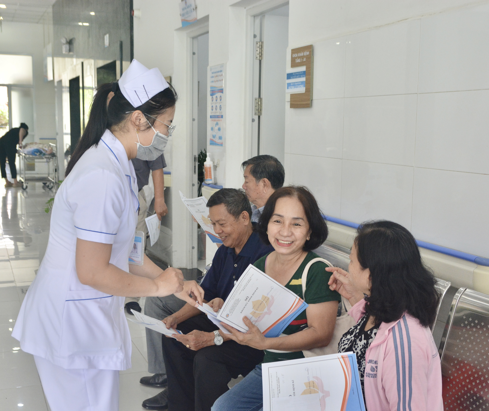
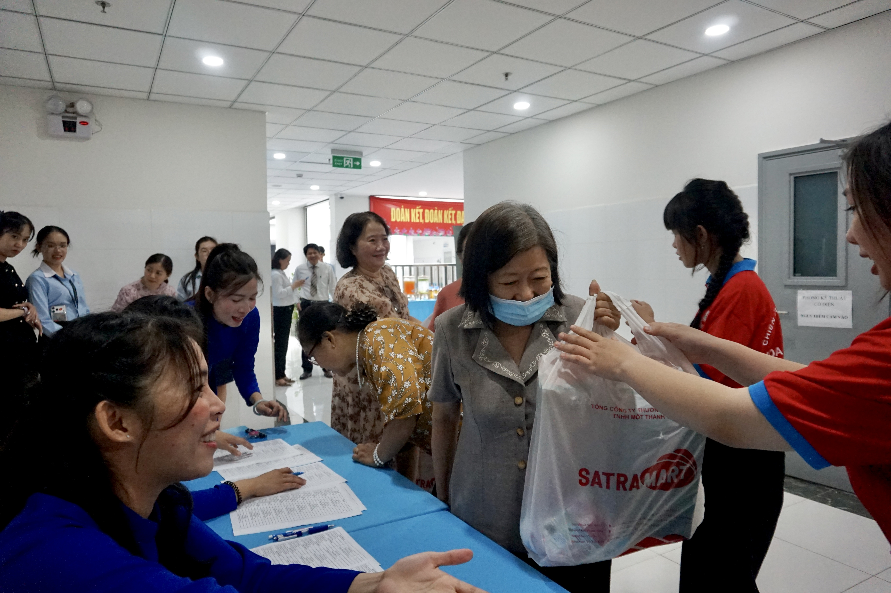

Chung tay để chăm sóc sức khỏe trở thành chuyện của toàn dân
Trong bối cảnh dân số già hóa và các bệnh mạn tính gia tăng, việc chăm sóc sức khỏe cần bắt đầu từ ý thức chủ động của mỗi người dân. Chuyển từ tư duy “khám bệnh” sang “phòng bệnh” là thông điệp xuyên suốt tại Hội thảo Vì sức khỏe cộng đồng lần 1 do Bệnh viện Phục hồi chức năng - Điều trị bệnh nghề nghiệp tổ chức.

Xây dựng thói quen chăm sóc sức khỏe chủ động
Ngày 4/6, Bệnh viện Phục hồi chức năng - Điều trị bệnh nghề nghiệp TP.HCM phối hợp cùng UBND phường Chánh Hưng tổ chức Hội thảo Vì sức khỏe cộng đồng lần thứ nhất năm 2026, đồng thời ra mắt hoạt động Phòng Khám và Tư vấn sức khỏe.
Chương trình quy tụ khoảng 250 người dân, chủ yếu là người cao tuổi trên địa bàn. Tại đây, người tham dự được cập nhật những kiến thức hữu ích về chăm sóc sức khỏe, tư vấn y tế trực tiếp và kiểm tra sức khỏe tổng quát. Dịp này, bệnh viện cũng trao tặng nhiều phần quà thiết thực nhằm động viên, chăm lo đời sống người dân.

Phát biểu tại hội thảo, BS. CKII Trần Ngọc Triệu - Phó Giám đốc Sở Y tế TP. HCM đề cao những bước đi tiên phong mang ý nghĩa nhân văn sâu sắc của bệnh viện trong việc đưa các kiến thức chăm sóc sức khỏe đến gần hơn với cộng đồng, giúp xây dựng nền tảng vững chắc cho một xã hội khoẻ mạnh.
Theo ông, việc đẩy mạnh y tế dự phòng và nâng cao nhận thức của người dân về chăm sóc sức khỏe chủ động là một trong những giải pháp quan trọng nhằm phát hiện sớm bệnh tật, quản lý sức khỏe người dân liên tục, toàn diện và hiệu quả.

Ông Dương Văn Dân - Phó Chủ tịch UBND phường Chánh Hưng, TP.HCM chia sẻ, chương trình hướng tới chia sẻ những kiến thức y tế thiết thực nhằm giúp người dân nắm bắt các phương pháp chăm sóc y tế phù hợp, đồng thời tiếp cận các dịch vụ khám sức khỏe và phục hồi chức năng. “Chúng tôi hướng tới xây dựng ý thức chăm sóc sức khỏe chủ động trong cộng đồng, để mỗi người dân trở thành một 'nhân viên y tế' cho chính mình và gia đình”, ông Dân nhấn mạnh.

Xây dựng thói quen chăm sóc sức khỏe chủ động
Không tập trung vào những nội dung mang tính lý thuyết, hội thảo lựa chọn các chủ đề gần gũi với đời sống thường ngày như chế độ dinh dưỡng, sơ cứu chấn thương, phục hồi chức năng và chăm sóc sức khỏe của người cao tuổi tại cộng đồng.
Nhờ cách dẫn dắt linh hoạt cùng nhiều ví dụ thực tế, các chuyên gia đã biến những kiến thức y khoa vốn khô khan thành những câu chuyện dễ tiếp nhận. Nhiều người dân chăm chú theo dõi, hào hứng trao đổi và không ít lần bật cười trước những chia sẻ dí dỏm của diễn giả.

Tham gia hội thảo, bà Nguyễn Thị Tư (68 tuổi, phường Chánh Hưng) cho biết bà đặc biệt quan tâm đến các nội dung về dinh dưỡng và phòng ngừa té ngã ở người cao tuổi. “Nhiều nội dung tưởng chừng đơn giản nhưng lại rất cần thiết, như cách phòng tránh té ngã trong sinh hoạt hằng ngày hay lựa chọn thực phẩm phù hợp cho người lớn tuổi. Tôi nghĩ những chương trình như thế này giúp người dân hiểu hơn về sức khỏe của mình, từ đó chủ động phòng bệnh thay vì đợi đến khi có bệnh mới đi khám”, bà nói.
Mở rộng cơ hội tiếp cận dịch vụ y tế
Dịp này, Bệnh viện Phục hồi chức năng - Điều trị bệnh nghề nghiệp cũng chính thức ra mắt phòng Khám và Tư vấn sức khỏe. Mô hình mới được xây dựng nhằm giúp người dân thuận tiện hơn trong việc tiếp cận các dịch vụ tư vấn sức khỏe và tầm soát bệnh tật. Ngay sau lễ ra mắt, nhiều người dân đã trực tiếp tham quan, tìm hiểu và nhận tư vấn từ đội ngũ y bác sĩ tại phòng khám mới.

Việc tổ chức Hội thảo Vì sức khỏe cộng đồng lần 1 cùng với sự ra đời của Phòng Khám và Tư vấn sức khỏe được kỳ vọng sẽ góp phần lan tỏa thói quen chăm sóc sức khỏe chủ động trong cộng đồng, từng bước đưa các dịch vụ y tế đến gần người dân hơn, phù hợp với định hướng phát triển y tế dự phòng và chăm sóc sức khỏe toàn dân của ngành y tế TP.HCM.